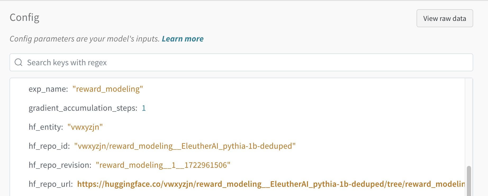
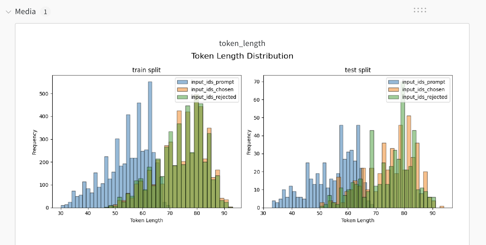
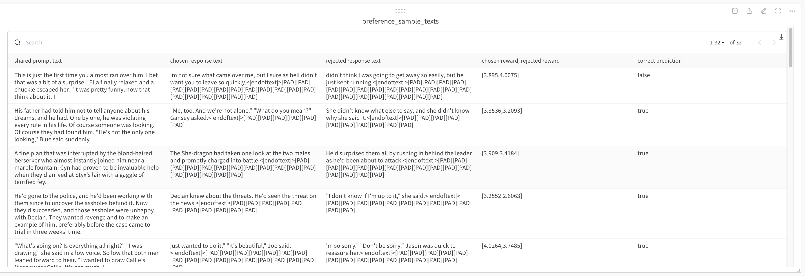

Reward model training
open_instruct/online_dpo.py contains the script for training online DPO models.
Get started
In the sections below, we will include some examples on how to train models and demonstrating different features. A couple of notes:
- You should adjust your
per_device_train_batch_sizeandgradient_accumulation_stepsaccordingly to maximize throughput on a particular GPU type. - If you set
take_top_bottom_generation, you can use anum_generation_per_promptlarger than 2 -- it just takes the top and bottom scoring generations for each prompt. - For the examples below, we use
mason.pyto invoke experiment orchastration on Ai2's cluster. For external users, you can copy the command after the--and run it on your system or debug locally. For example: the documentation will have commands like the following, but you can just run$YOUR_COMMANDon your system and make sure it matches$NUM_GPUS.- You can you
--image costah/open_instruct_onlinedpo2to specify a custom image or if you don't specify any it's going to use the default image. - If you installed your python on NFS you can run a debug mode by not toggling
--pure_docker_modeand it will mount your python environment on the docker container.
- You can you
python mason.py \
--cluster ai2/jupiter \
--image costah/open_instruct_onlinedpo2 --pure_docker_mode \
--priority preemptible \
--budget ai2/jupiter \
--gpus $NUM_GPUS -- $YOUR_COMMAND
WARNING: This script is not battle-tested. There may be bugs and issues -- please report them! Use at your own risk.
Level 0: single GPU; quick debug. Should take less than 10 minutes to finish
python open_instruct/online_dpo_vllm_thread.py \
--dataset_mixer_list trl-internal-testing/tldr-preference-sft-trl-style 1.0 \
--dataset_mixer_eval_list trl-internal-testing/tldr-preference-sft-trl-style 1.0 \
--dataset_mixer_list_splits train \
--dataset_mixer_eval_list_splits validation \
--max_token_length 1024 \
--max_prompt_token_length 512 \
--model_name_or_path cleanrl/EleutherAI_pythia-1b-deduped__sft__tldr \
--reward_model_path cleanrl/EleutherAI_pythia-1b-deduped__reward__tldr \
--non_stop_penalty \
--stop_token eos \
--chat_template simple_concat_with_space \
--learning_rate 3e-6 \
--total_episodes 3000 \
--per_device_train_batch_size 2 \
--per_device_eval_batch_size 2 \
--gradient_accumulation_steps 64 \
--max_token_length 1024 \
--max_prompt_token_length 512 \
--beta 0.1 \
--output_dir models/rm/rm_sentiment_1b \
--single_gpu_mode \
--hf_metadata_dataset "" \
--no_try_launch_beaker_eval_jobs \
--gradient_checkpointing \
--with_tracking \
--push_to_hub \
--vllm_gpu_memory_utilization 0.5 \
--actor_num_gpus_per_node 1 \
--local_mini_batch_size 32 \
--num_mini_batches 1 \
--vllm_sync_backend gloo
# LEVEL 0.1: two GPU; quick debug; using 1 GPU for training and 1 GPU for vllm generation via --vllm_device cuda:1
python open_instruct/online_dpo_vllm_thread.py \
--dataset_mixer_list trl-internal-testing/tldr-preference-sft-trl-style 1.0 \
--dataset_mixer_eval_list trl-internal-testing/tldr-preference-sft-trl-style 1.0 \
--dataset_mixer_list_splits train \
--dataset_mixer_eval_list_splits validation \
--max_token_length 1024 \
--max_prompt_token_length 512 \
--model_name_or_path cleanrl/EleutherAI_pythia-1b-deduped__sft__tldr \
--reward_model_path cleanrl/EleutherAI_pythia-1b-deduped__reward__tldr \
--non_stop_penalty \
--stop_token eos \
--chat_template simple_concat_with_space \
--learning_rate 3e-6 \
--total_episodes 3000 \
--per_device_train_batch_size 2 \
--per_device_eval_batch_size 2 \
--gradient_accumulation_steps 64 \
--max_token_length 1024 \
--max_prompt_token_length 512 \
--num_train_epochs 1 \
--beta 0.1 \
--output_dir models/rm/rm_sentiment_1b \
--single_gpu_mode \
--vllm_gpu_memory_utilization 0.5 \
--actor_num_gpus_per_node 1 \
--local_mini_batch_size 32 \
--num_mini_batches 1 \
--vllm_sync_backend gloo
--no_try_launch_beaker_eval_jobs \
--gradient_checkpointing \
--with_tracking \
--push_to_hub
Old examples
These examples use the older form of the script available at https://github.com/allenai/open-instruct/blob/efa36849bd65db7614e6729344df94ace83b7228/open_instruct/online_dpo_vllm_thread.py. These require older package versions, use at your own risk.
LEVEL 1: 8 GPU; TL;DR summarization
Here we are using --vllm_device cuda:7 to say we want to launch the vllm generation engine on the 8th GPU (or GPU_7 using 0 index)
# for running TL;DR you can likely use GPUs with less memory
python mason.py \
--image nathanl/open_instruct_auto --pure_docker_mode \
--cluster ai2/jupiter \
--priority normal \
--resumable \
--preemptible \
--budget ai2/jupiter \
--gpus 8 -- accelerate launch --num_processes 7 --config_file configs/ds_configs/deepspeed_zero3.yaml \
open_instruct/online_dpo_vllm_thread.py \
--dataset_mixer '{"trl-internal-testing/tldr-preference-sft-trl-style": 1.0}' \
--dataset_train_splits train \
--dataset_eval_mixer '{"trl-internal-testing/tldr-preference-sft-trl-style": 1.0}' \
--dataset_eval_splits validation \
--max_token_length 1024 \
--max_prompt_token_length 512 \
--learning_rate 3e-6 \
--output_dir models/minimal/online_dpo_vllm_thread_tldr \
--per_device_train_batch_size 16 \
--local_rollout_forward_batch_size 32 \
--gradient_accumulation_steps 4 \
--num_epochs 1 \
--num_mini_batches 1 \
--total_episodes 1000000 \
--model_name_or_path cleanrl/EleutherAI_pythia-1b-deduped__sft__tldr \
--reward_model_path cleanrl/EleutherAI_pythia-1b-deduped__reward__tldr \
--non_stop_penalty \
--stop_token eos \
--beta 0.1 \
--response_length 53 \
--with_tracking \
--push_to_hub \
--hf_metadata_dataset '""' \
--no_try_launch_beaker_eval_jobs \
--single_gpu_mode
- Tracked experiment: https://wandb.ai/ai2-llm/open_instruct_internal/runs/fub45jhm
- Trained model: https://huggingface.co/vwxyzjn/online_dpo_vllm_thread__cleanrl_EleutherAI_pythia-1b-deduped__sft__tldr/tree/online_dpo_vllm_thread__1__1726080959
LEVEL 2: 8 GPU; Huggingface no robot
# for running chat based models you should use an 8xH100 node.
python mason.py \
--cluster ai2/jupiter \
--image nathanl/open_instruct_auto --pure_docker_mode \
--workspace ai2/tulu-3-dev \
--priority high \
--preemptible \
--budget ai2/jupiter \
--gpus 8 -- accelerate launch --num_processes 7 --config_file configs/ds_configs/deepspeed_zero3.yaml \
open_instruct/online_dpo_vllm_thread.py \
--exp_name "online_dpo_vllm_thread_beta_0.03" \
--dataset_mixer '{"HuggingFaceH4/no_robots": 1.0}' \
--dataset_train_splits train \
--dataset_eval_mixer '{"HuggingFaceH4/no_robots": 1.0}' \
--dataset_eval_splits test \
--max_token_length 1024 \
--max_prompt_token_length 512 \
--learning_rate 8e-7 \
--output_dir /output/ \
--chat_template tulu \
--per_device_train_batch_size 1 \
--per_device_eval_batch_size 1 \
--gradient_accumulation_steps 32 \
--local_rollout_forward_batch_size 1 \
--vllm_device cuda:7 \
--num_epochs 1 \
--num_mini_batches 1 \
--total_episodes 100000 \
--model_name_or_path allenai/open_instruct_dev \
--model_revision costa_finetune_tulu3_8b_norobot__meta-llama_Meta-Llama-3.1-8B__42__1725559869 \
--reward_model_path vwxyzjn/reward_modeling__allenai_open_instruct_dev \
--reward_model_revision reward_modeling__1__1725760619 \
--non_stop_penalty \
--stop_token eos \
--penalty_reward_value -10.0 \
--beta 0.03 \
--num_evals 3 \
--seed 3 \
--response_length 1024 \
--gradient_checkpointing \
--with_tracking \
--push_to_hub
- Tracked experiment: https://wandb.ai/ai2-llm/open_instruct_internal/runs/do4nuqhh
- Trained model: https://huggingface.co/vwxyzjn/online_dpo_vllm_thread_beta_0.03__allenai_open_instruct_dev/tree/online_dpo_vllm_thread_beta_0.03__3__1726200312
LEVEL 3: 8 GPU; Training on ultrafeedback RM
# for running chat based models you should use an 8xH100 node.
python mason.py \
--cluster ai2/jupiter \
--image nathanl/open_instruct_auto --pure_docker_mode \
--workspace ai2/tulu-3-dev \
--priority high \
--preemptible \
--budget ai2/jupiter \
--gpus 8 -- accelerate launch --num_processes 7 --config_file configs/ds_configs/deepspeed_zero3.yaml \
open_instruct/online_dpo_vllm_thread.py \
--exp_name "online_dpo_vllm_thread_beta_0.03" \
--dataset_mixer '{"allenai/ultrafeedback_binarized_cleaned": 1.0}' \
--sft_messages_key chosen \
--dataset_train_splits train_prefs \
--dataset_eval_mixer '{"allenai/ultrafeedback_binarized_cleaned": 1.0}' \
--dataset_eval_splits test_prefs \
--max_token_length 1024 \
--max_prompt_token_length 512 \
--learning_rate 8e-7 \
--output_dir /output/ \
--chat_template tulu \
--per_device_train_batch_size 2 \
--per_device_eval_batch_size 1 \
--gradient_accumulation_steps 32 \
--local_rollout_forward_batch_size 1 \
--vllm_device cuda:7 \
--num_epochs 1 \
--num_mini_batches 1 \
--total_episodes 300000 \
--model_name_or_path allenai/open_instruct_dev \
--model_revision finetune__meta-llama_Meta-Llama-3.1-8B__42__1725751338 \
--reward_model_path vwxyzjn/reward_modeling__allenai_llama-3-tulu-2-8b \
--reward_model_revision reward_modeling__1__1726175049 \
--non_stop_penalty \
--stop_token eos \
--penalty_reward_value -10.0 \
--beta 0.03 \
--num_evals 3 \
--response_length 1024 \
--gradient_checkpointing \
--with_tracking \
--push_to_hub
- Tracked experiment: https://wandb.ai/ai2-llm/open_instruct_internal/runs/le8luk2u
- Trained model: https://huggingface.co/vwxyzjn/online_dpo_vllm_thread_beta_0.03__allenai_open_instruct_dev/tree/online_dpo_vllm_thread_beta_0.03__1__1726282895
If you want to use beaker datasets
If you want to use beaker datasets, you need to mount your datasets using --beaker_datasets. An example command with beaker datasets models:
python mason.py \
--cluster ai2/jupiter \
--image nathanl/open_instruct_auto \
--pure_docker_mode \
--workspace ai2/tulu-3-dev \
--priority high \
--preemptible \
--budget ai2/jupiter \
--beaker_datasets /model:01J6DC8YQ291QA3QEYQTM3CBHE /reward_model:01J834TT3SB6PTB3QYPH33YJ6M \
--gpus 8 -- accelerate launch --num_processes 7 --config_file configs/ds_configs/deepspeed_zero3.yaml \
open_instruct/online_dpo_vllm_thread.py \
--exp_name "online_dpo_vllm_thread_beta_0.03" \
--dataset_mixer '{"allenai/ultrafeedback_binarized_cleaned": 1.0}' \
--sft_messages_key chosen \
--dataset_train_splits train_prefs \
--dataset_eval_mixer '{"allenai/ultrafeedback_binarized_cleaned": 1.0}' \
--dataset_eval_splits test_prefs \
--max_token_length 1024 \
--max_prompt_token_length 512 \
--learning_rate 8e-7 \
--output_dir /output/ \
--chat_template tulu \
--per_device_train_batch_size 2 \
--per_device_eval_batch_size 1 \
--gradient_accumulation_steps 32 \
--local_rollout_forward_batch_size 1 \
--vllm_device cuda:7 \
--num_epochs 1 \
--num_mini_batches 1 \
--total_episodes 300000 \
--model_name_or_path /model \
--reward_model_path /reward_model \
--non_stop_penalty \
--stop_token eos \
--penalty_reward_value -10.0 \
--beta 0.03 \
--num_evals 3 \
--response_length 1024 \
--gradient_checkpointing \
--with_tracking \
--push_to_hub
Quality of life tools
Note that when running with --push_to_hub and --with_tracking, the HF repo is automatically tracked to wandb, so we link the tracked run and the trained model.

Furthermore, we also track the dataset length visualization in wandb (see detail in here)

Finally, we also include samples

Explanation of the logged metrics
episode: the global episode number training has gone through (e.g.,3000means we have trained on 3000 data points already)lr: the current learning rateepoch: the fraction or multiple of the epoch (e.g.,2.7means we have trained on the dataset for 2 epochs and 70% of the third epoch)objective/kl: the KL divergence between the current policy and the reference policy (sum of the KL divergence of each response token)objective/scores: the scores of the current response, rated by a reward modelobjective/rlhf_reward: the RLHF reward, which isobjective/scores-beta*objective/klobjective/non_score_reward:beta*objective/klobjective/entropy: the entropy of the current policyobjective/scores_margin: the difference between the chosen response scores and the rejected response scores. We pick the chosen response to be the response with higher scores, and the rejected response to be the response with lower scoresobjective/loss: the DPO losslogps/chosen: the log probability of the chosen responselogps/rejected: the log probability of the rejected responsereward/chosen: the implicit DPO reward of the chosen responsereward/rejected: the implicit DPO reward of the rejected responsereward_margin: the difference between the implicit PDO chosen reward and the implicit rejected rewardtime/from_scratch: the time taken to train the model from scratchtime/training: the time taken to do one training stepval/sequence_lengths: the length of the sequences in the generated responsesval/num_stop_token_ids: the number of stop tokens in the generated responses
Implementation details
These are relevant implementation details on reward modeling:
- The tokenizer pads from the left, so it's straightforward to do generations.
- Disable dropout in the model: this is an implementation detail in PPO training (see p.3. in https://arxiv.org/pdf/1909.08593).
- Layer initialization: we initialize the score's weight according to
std=1 / np.sqrt(model.config.hidden_size + 1)(see p. 11 in https://arxiv.org/abs/2009.01325) - Vocab size for RM and Policy: we use the same vocab size for the reward model and the policy model. This is to ensure that the reward model can score all the tokens in the policy model. We added a
ValueErrorfor situations whenpolicy.config.vocab_size != reward_model.config.vocab_size. - Retrain on the same prompts: say we only have 10k prompts but we specified
--episodes 100k, we will shuffle the prompts at every 10k episodes and retrain on them. - Truncate responses at the stop token: we truncate the responses at the
--stop_token eosto ensure the generation is stopped at the stop token. - Non-stop penalty: we use a non-stop penalty to the reward model to penalize the model for not stopping at the stop token. For example, if the model does not end at the stop token, we penalize the model by
-10.0(see--penalty_reward_value -10.0). - Async training and generation: we follow the architecture in https://arxiv.org/abs/2310.00036 to do rollout and training asynchronously. This is to ensure that the training is not bottlenecked by the generation.
- We also optimizes online DPO runtime by re-using the model training logprob to save an additional forward pass; notice that this does impact KL calculation and causes some numerical issues. See https://github.com/allenai/open-instruct/pull/364 for more detail.
import queue
import threading
import time
class Agent():
def __init__(self):
self.param = 1
def learn(self, data):
self.param += 1
def query_generator_fn():
for i in range(1, 100):
yield i
ITER = 7
batch_size = 32
agent = Agent()
data_Q = queue.Queue(maxsize=1)
param_and_query_Q = queue.Queue(maxsize=1)
def actor():
for i in range(1, ITER + 1):
params, query = param_and_query_Q.get()
data = params
print(f"[actor] generating data _{params} -> p_{query} D__{data}")
time.sleep(1) # simulate data generation
data_Q.put((query, data))
actor_thread = threading.Thread(target=actor)
actor_thread.start()
# initial param put
generator = query_generator_fn()
next_queries = next(generator)
param_and_query_Q.put((agent.param, next_queries))
# cleanba style stuff
async_mode = True
start_time = time.time()
for g in range(1, ITER + 1):
queries = next_queries
if async_mode:
if g != 1:
next_queries = next(generator)
param_and_query_Q.put((agent.param, queries))
else:
if g != 1:
next_queries = next(generator)
param_and_query_Q.put((agent.param, next_queries)) # note the indent here is different
_, data = data_Q.get()
old_param = agent.param
agent.learn(data)
time.sleep(1) # simulate training
print(f"--[leaner] get _{old_param} -> p_{queries} D__{data} -> _{agent.param}, time: {time.time() - start_time}")
actor_thread.join()
[actor] generating data _1 -> p_1 D__1
[actor] generating data _1 -> p_1 D__1
--[leaner] get _1 -> p_1 D__1 -> _2, time: 2.0022709369659424
[actor] generating data _2 -> p_1 D__2
--[leaner] get _2 -> p_1 D__1 -> _3, time: 3.003502607345581
[actor] generating data _3 -> p_2 D__3
--[leaner] get _3 -> p_2 D__2 -> _4, time: 4.004725933074951
[actor] generating data _4 -> p_3 D__4
--[leaner] get _4 -> p_3 D__3 -> _5, time: 5.005916118621826
[actor] generating data _5 -> p_4 D__5
--[leaner] get _5 -> p_4 D__4 -> _6, time: 6.007085800170898
[actor] generating data _6 -> p_5 D__6
--[leaner] get _6 -> p_5 D__5 -> _7, time: 7.007669448852539
--[leaner] get _7 -> p_6 D__6 -> _8, time: 8.009439706802368